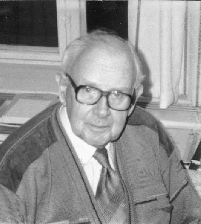

The central limit theorem justifies replacing a normalized sum of independent random variables by a Gaussian. This approximation underlies much of statistics, from estimating measurement errors to calculating threshold probabilities. But a limiting theorem alone does not tell us how many observations are needed for the approximation to be accurate.
Andrew C. Berry in 1941 and Carl-Gustav Esseen in 1942 independently gave quantitative bounds [5], [6]. For centered, unit-variance independent copies of a variable with finite third absolute moment, the Berry–Esseen theorem bounds the largest CDF error by a universal constant times that moment divided by \(\sqrt n\). Such an estimate controls the error in using Gaussian probabilities at any threshold. It is an upper bound, and particular distributions can converge faster.
Here we study this question in the Wasserstein distance \(W_1\), which integrates the absolute CDF error rather than taking its maximum. We compute the leading error for two simple distributions. Even though both are symmetric and bounded, they converge at different powers of the sample size. These sharper Wasserstein asymptotics are distinct from the original Berry–Esseen estimates.
Andrew C. Berry

Carl-Gustav Esseen
Compare a fair coin taking values \(\pm1\) with a continuous uniform variable on \([-\sqrt3,\sqrt3]\). Both have mean zero, variance one, and zero skewness. Yet their normalized sums satisfy
\[ \begin{aligned} W_1(\operatorname{Law}(S_n^{\mathrm B}),\gamma) &\sim\frac{1}{2\sqrt n},\\ W_1(\operatorname{Law}(S_n^{\mathrm U}),\gamma) &\sim\frac{C_{\mathrm U}}n, \end{aligned} \]where \(\gamma=\mathcal N(0,1)\) and
\[ C_{\mathrm U} =\frac{1+4e^{-3/2}}{10\sqrt{2\pi}} \approx0.0755. \]The difference comes from the small staircases in the coin-sum CDF. Their width is still of order \(n^{-1/2}\), regardless of symmetry. This is the phenomenon behind Propositions 10.3–10.4 of Optimal Transport for Machine Learners [1].
The CDF formula for one-dimensional Wasserstein distance
For probability laws \(\mu,\nu\) on the line with finite first moments,
\[ \begin{aligned} W_1(\mu,\nu) &=\inf_{(X,Y):\,X\sim\mu,\,Y\sim\nu}\mathbb E|X-Y|\\ &=\int_{\mathbb R}|F_\mu(x)-F_\nu(x)|\,dx. \end{aligned} \]The optimal coupling matches equal quantiles. The area between quantile graphs equals the area between the CDF graphs, which gives the second formula [2]. The absolute value matters: positive and negative CDF errors cannot cancel.
Let \(X_1,X_2,\ldots\) be independent copies of a centered, unit-variance variable \(X\), and put \(S_n=n^{-1/2}\sum_{i=1}^nX_i\). Write \(F_n\) for its CDF and \(\Phi,\phi\) for the standard Gaussian CDF and density. We need to understand the shape of \(F_n-\Phi\), not just bound its maximum.
Lattice corrections
A lattice of span \(h\) is a set \(a+h\mathbb Z\). The maximal span is the largest spacing of a lattice containing the support. For a fair \(\pm1\) variable, it is \(2\), not \(1\): the normalized sum has adjacent values separated by \(2/\sqrt n\).
Theorem 1 (the symmetric lattice rate). Suppose \(X\) is symmetric, centered, has variance one, and has finite support contained in a lattice of maximal span \(h>0\). Then
\[ W_1(\operatorname{Law}(S_n),\gamma) =\frac{h}{4\sqrt n}+o(n^{-1/2}). \]Thus the fair-coin constant is \(1/2\).
Proof: average the absolute continuity correction
The lattice Edgeworth expansion gives
\[ \begin{aligned} F_n(x)-\Phi(x) &=\frac h{\sqrt n}\, \psi\!\left(\frac{\sqrt n\,x-na}{h}\right)\phi(x)+r_n(x),\\ \psi(u)&=\tfrac12-\{u\},\qquad \|r_n\|_{L^1}=o(n^{-1/2}), \end{aligned} \]where \(\{u\}\) is the fractional part. Values at the jump points have no effect on the integral. Lattice local-limit and Edgeworth theory give this half-cell correction with \(\|r_n\|_\infty=O(n^{-1})\) [3], [4]. A uniform fourth-moment bound then yields the stated \(L^1\) remainder by the tail argument below. Symmetry removes the smooth skewness term at order \(n^{-1/2}\).
The inequality \(\bigl||u+v|-|u|\bigr|\le|v|\) shows that the remainder changes the Wasserstein distance by \(o(n^{-1/2})\). The absolute sawtooth oscillates increasingly rapidly and has mean
\[ \int_0^1\left|\tfrac12-u\right|\,du=\frac14. \]Consequently its integral against \(\phi\) tends to \(1/4\). To see this without a probabilistic argument, first use a compactly supported step function as weight: each interval contains an integer number of full periods plus two negligible partial periods. Then approximate \(\phi\) in \(L^1\), using the uniform bound \(|\psi|\le1/2\). Multiplying by \(h/\sqrt n\) proves the result. \(\square\)
Geometrically, one transports a smooth Gaussian mass within cells of width \(h/\sqrt n\) to lattice sites near their centers. The average distance to the center of an interval of width \(\delta\) is \(\delta/4\). The theorem gives this interpretation a precise form, with the same constant throughout this symmetric lattice class.
Fourth-cumulant corrections for continuous laws
For a symmetric law with a density, the staircase disappears. The first possible smooth correction comes from the fourth cumulant
\[ \kappa_4=\mathbb E[X^4]-3. \]The value \(3\) is the fourth moment of a standard Gaussian, so \(\kappa_4\) measures a departure from Gaussian shape after variance and skewness have been matched.
Theorem 2 (the symmetric density rate). Suppose \(X\) is symmetric, centered, has variance one, has a density, and has finite moments of every order. Then
\[ W_1(\operatorname{Law}(S_n),\gamma) =\frac{|\kappa_4|}{24n} \int_{\mathbb R}|x^3-3x|\phi(x)\,dx+o(n^{-1}). \]The moment assumptions are convenient sufficient conditions, rather than a minimal list. If \(\kappa_4=0\), the conclusion is \(o(n^{-1})\); it does not assert a nonzero equivalent.
Proof: the first nonzero smooth Edgeworth term
For fixed frequency \(t\), the characteristic function has the expansion
\[ \mathbb E e^{itS_n} =e^{-t^2/2} \left(1+\frac{\kappa_4t^4}{24n}+o(n^{-1})\right). \]Symmetry removes the cubic term. Fourier inversion suggests a fourth derivative of the Gaussian density; integrating once produces the third Hermite polynomial \(H_3(x)=x^3-3x\).
The Edgeworth theorem, together with a tail estimate, gives the integrated expansion
\[ F_n-\Phi =-\frac{\kappa_4}{24n}H_3\phi+r_n, \qquad \|r_n\|_{L^1}=o(n^{-1}). \]The analytic input is the usual uniform Edgeworth expansion [3], [4]. It applies because a density makes the characteristic function \(\chi(t)=\mathbb E e^{itX}\) tend to zero at infinity, so Cramér's condition \(\limsup_{|t|\to\infty}|\chi(t)|<1\) holds. The fixed-frequency calculation alone would not justify integration over the entire line.
Why the remainders in both theorems can be integrated
Use the uniform Edgeworth expansion through order \(n^{-2}\). Symmetry removes the terms of orders \(n^{-1/2}\) and \(n^{-3/2}\); the remaining correction after the displayed \(n^{-1}\) term is a Gaussian times a polynomial, of order \(n^{-2}\). Thus \(\|r_n\|_\infty=O(n^{-2})\).
Also \(\sup_n\mathbb E|S_n|^8<\infty\). Indeed, expanding the eighth power, independence and centering eliminate every term with a singly occurring index. At most four distinct indices remain, giving \(O(n^4)\) terms before normalization by \(n^4\).
Put \(R_n=n^{1/4}\). Integrating the uniform bound on \([-R_n,R_n]\) gives \(O(n^{-7/4})\). Outside this interval, with \(Z\sim\gamma\),
\[ \begin{aligned} \int_{|x|>R_n}|F_n(x)-\Phi(x)|\,dx &\le\mathbb E(|S_n|-R_n)_+ +\mathbb E(|Z|-R_n)_+\\ &\le\frac{\mathbb E|S_n|^8+\mathbb E|Z|^8}{R_n^7} =O(n^{-7/4}). \end{aligned} \]The tail of \(n^{-1}H_3\phi\) is exponentially small. Combining the central interval and the tails proves \(\|r_n\|_1=o(n^{-1})\). This is the step which a pointwise expansion cannot replace.
For Theorem 1, the same argument uses \(\|r_n\|_\infty=O(n^{-1})\) and uniformly bounded fourth moments. With the same \(R_n=n^{1/4}\), the central integral is \(O(n^{-3/4})\), and the tail is \(O(R_n^{-3})=O(n^{-3/4})\); the sawtooth times \(\phi\) has a Gaussian tail. Thus \(\|r_n\|_1=o(n^{-1/2})\), as required there.
Apply \(\bigl||u+v|-|u|\bigr|\le|v|\) and integrate to obtain the formula. \(\square\)
The asymptotic constant for the uniform distribution
For \(X\) uniform on \([-\sqrt3,\sqrt3]\), \(\mathbb E[X^4]=9/5\), so \(\kappa_4=-6/5\). The remaining Gaussian integral can be evaluated without numerical quadrature.
Calculation: split at the roots of the Hermite polynomial
The roots of \(H_3(x)=x(x^2-3)\) are \(0,\pm\sqrt3\), and
\[ \frac{d}{dx}\bigl[(x^2-1)\phi(x)\bigr] =-(x^3-3x)\phi(x). \]By symmetry and integration over the two positive intervals,
\[ \int_{\mathbb R}|x^3-3x|\phi(x)\,dx =2\phi(0)+8\phi(\sqrt3). \]Multiplication by \(|\kappa_4|/24=1/20\) gives
\[ C_{\mathrm U} =\frac{\phi(0)+4\phi(\sqrt3)}{10} =\frac{1+4e^{-3/2}}{10\sqrt{2\pi}}. \]There are two distinct mechanisms: a rapidly oscillating lattice error of order \(n^{-1/2}\), and a smooth kurtosis error of order \(n^{-1}\). Both are visible before taking any absolute-value integral.
Numerical experimentation
Choose the number of summands to compare the laws of \(S_n=(X_1+\cdots+X_n)/\sqrt n\). Both inputs are centered with variance one, so no further adjustment is needed to compare their sums with the standard Gaussian. The top panels show Bernoulli sums in blue and continuous uniform sums in red, with the same dashed Gaussian density and fixed horizontal and vertical scales.
The bars preserve probability: their area, rather than their height, is the represented mass. For the Bernoulli sum, the atom at \(x_k=(2k-n)/\sqrt n\) has mass \(2^{-n}\binom nk\). Its bar is centered at \(x_k\), has the lattice width \(h_n=2/\sqrt n\), and height \(2^{-n}\binom nk/h_n\). These bars visualize a discrete law; they do not turn it into a density. The uniform sum is genuinely continuous. Its red bars show the exact probability of each interval of width \(0.25\), divided by that width, using the continuous Irwin–Hall CDF. The heights are not fitted to the Gaussian, and the window is not renormalized.
The rescaled quantities \(\sqrt n\,W_1\) and \(nW_1\) approach \(1/2\) for Bernoulli input and \(C_{\mathrm U}\) for continuous uniform input, respectively. Both bar plots can look close to the Gaussian even while their errors decay at different rates.
This distinction matters numerically. If we first replace a uniform variable by a fixed finite grid, we have changed it into a lattice law. At sufficiently large \(n\), the lattice term dominates and the asymptotic rate changes. Increasing the quadrature resolution for the continuous CDF is legitimate; changing the input into discrete mass is a different experiment.
Likewise, the coin characteristic function \(\cos t\) returns to modulus one at arbitrarily large frequencies. It fails Cramér's condition. More generally, merely being nonlattice is weaker than satisfying that condition. Symmetry and arbitrarily many finite moments cannot remove the coin's lattice obstruction.
References
- Gabriel Peyré. Optimal Transport for Machine Learners, Proposition 10.3 and Proposition 10.4. Book manuscript.
- Gabriel Peyré and Marco Cuturi. Computational Optimal Transport. Foundations and Trends in Machine Learning 11(5–6), 355–607, 2019.
- Valentin V. Petrov. Sums of Independent Random Variables. Springer, 1975. Chapters VI–VII.
- Rabi N. Bhattacharya and R. Ranga Rao. Normal Approximation and Asymptotic Expansions. SIAM, 2010; original edition 1976. Chapters 4–5.
- Andrew C. Berry. The accuracy of the Gaussian approximation to the sum of independent variates. Transactions of the American Mathematical Society 49(1), 122–136, 1941.
- Carl-Gustav Esseen. On the Liapounoff limit of error in the theory of probability. Arkiv för Matematik, Astronomi och Fysik 28A(9), 1–19, 1942.